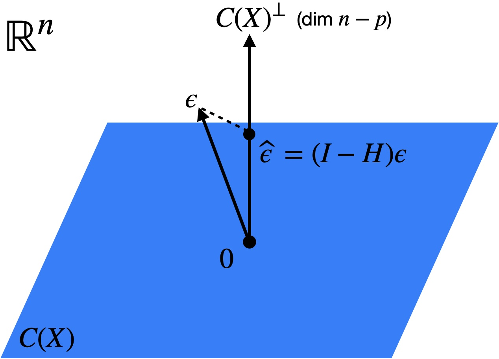

We now understand the least squares estimator \(\boldsymbol{\widehat{\beta}}\) from geometric and algebraic points of view. In Chapter 2, we will switch to a probabilistic perspective to derive inferential statements for linear models, in the form of hypothesis tests and confidence intervals. In order to facilitate this, we will assume that the error terms are normally distributed:
First we put in place some building blocks: The multivariate normal distribution (Section 2.1.1), the distributions of linear regression estimates and residuals (Section 2.1.2), and estimation of the noise variance \(\sigma^2\) (Section 2.1.3).
2.1.1 The multivariate normal distribution
Recall that a random vector \(\boldsymbol{w} \in \mathbb{R}^d\) has a multivariate normal distribution with mean \(\boldsymbol{\mu}\) and covariance matrix \(\boldsymbol{\Sigma}\) if it has probability density
Next, let’s consider the joint distribution of \(\boldsymbol{\widehat{\mu}} = \boldsymbol{X} \boldsymbol{\widehat{\beta}}\) and \(\boldsymbol{\widehat{\epsilon}} = \boldsymbol{y} - \boldsymbol{X} \boldsymbol{\widehat{\beta}}\). We have
The statistical independence between \(\boldsymbol{\widehat{\mu}}\) and \(\boldsymbol{\widehat{\epsilon}}\) is a result of the fact that these two quantities are projections of \(\boldsymbol{y}\) onto two orthogonal subspaces: \(C(\boldsymbol{X})\) and \(C(\boldsymbol{X})^\perp\) (Figure 2.1).
Figure 2.1: The fitted vector \(\boldsymbol{\widehat{\mu}}\) and the residual vector \(\boldsymbol{\widehat{\epsilon}}\) are projections of \(\boldsymbol{y}\) onto orthogonal subspaces.
Since \(\boldsymbol{\widehat{\beta}}\) is a deterministic function of \(\boldsymbol{\widehat{\mu}}\) (in particular, \(\boldsymbol{\widehat{\beta}} = (\boldsymbol{X}^\top \boldsymbol{X})^{-1}\boldsymbol{X}^\top \boldsymbol{\widehat{\mu}}\)), it also follows that
2.1.3 Estimation of the noise variance \(\sigma^2\)
See also Dunn and Smyth 2.4.2, 2.5.3
We can’t quite do inference for \(\boldsymbol{\beta}\) based on the distributional result 2.1 because the noise variance \(\sigma^2\) is unknown to us. Intuitively, since \(\sigma^2 = \mathbb{E}[\epsilon_i^2]\), we can get an estimate of \(\sigma^2\) by looking at the quantity \(\|\boldsymbol{\widehat{\epsilon}}\|^2\). To get the distribution of this quantity, we need the following lemma:
Lemma 2.1 Let \(\boldsymbol{w} \sim N(\boldsymbol{0}, \boldsymbol{P})\) for some projection matrix \(\boldsymbol{P}\). Then, \(\|\boldsymbol{w}\|^2 \sim \chi^2_d\), where \(d = \text{trace}(\boldsymbol{P})\) is the dimension of the subspace onto which \(\boldsymbol{P}\) projects.
Proof. Let \(\boldsymbol{P} = \boldsymbol{U} \boldsymbol{D} \boldsymbol{U}^\top\) be an eigenvalue decomposition of \(\boldsymbol{P}\), where \(\boldsymbol{U}\) is orthogonal and \(\boldsymbol{D}\) is a diagonal matrix with \(D_{ii} \in \{0,1\}\). We have \(\boldsymbol{w} \overset{d}{=} \boldsymbol{U} \boldsymbol{D} \boldsymbol{z}\) for \(\boldsymbol{z} \sim N(0, \boldsymbol{I}_n)\). Therefore,
Recall that \(\boldsymbol{I} - \boldsymbol{H}\) is a projection onto the \((n-p)\)-dimensional space \(C(\boldsymbol{X})^\perp\), so by Lemma 2.1 and equation 2.2 we have
is an unbiased estimate for \(\sigma^2\). Why does the denominator need to be \(n-p\) rather than \(n\) for the estimator above to be unbiased? The reason for this is that the residuals \(\boldsymbol{\widehat{\epsilon}}\) are the projection of the true noise vector \(\boldsymbol{\epsilon} \in \mathbb{R}^n\) onto the \((n-p)\)-dimensional subspace \(C(\boldsymbol{X})^\perp\) (Figure 2.2). To see this, note that
Therefore, the norm of the residual vector will be smaller than that of the noise vector, especially to the extent that \(p\) is close to \(n\).

Figure 2.2: The residual vector \(\boldsymbol{\widehat{\epsilon}}\) is the projection of the noise vector \(\boldsymbol{\epsilon}\) onto \(C(\boldsymbol{X})^\perp\).
2.2 Hypothesis Testing
See also Agresti 3.2.1, 3.2.2, 3.2.4, 3.2.8
Typically, two types of null hypotheses are tested in a regression setting: those involving one-dimensional parameters and those involving multi-dimensional parameters. For example, consider the null hypotheses \(H_0: \beta_j = 0\) and \(H_0: \boldsymbol{\beta}_S = \boldsymbol{0}\) for \(S \subseteq \{0, 1, \dots, p-1\}\), respectively. We discuss tests of these two kinds of hypotheses in Sections 2.2.1 and 2.2.2, and then discuss the power of these tests in Section 2.3.
2.2.1 Testing a One-Dimensional Parameter
See also Dunn and Smyth 2.8.3
2.2.1.1\(t\)-test for a Single Coefficient
The most common question to ask in a linear regression context is: Is the \(j\)th predictor associated with the response when controlling for the other predictors? In the language of hypothesis testing, this corresponds to the null hypothesis:
\[
H_0: \beta_j = 0
\tag{2.6}\]
According to 2.1, we have \(\widehat{\beta}_j \sim N(0, \sigma^2/s_j^2)\), where, as we learned in Chapter 1:
and we are tempted to define a level \(\alpha\) test of the null hypothesis 2.6 based on this normal distribution. While this is infeasible since we don’t know \(\sigma^2\), we can substitute in the unbiased estimate 2.5 derived in Section 2.1.3. Then,
is the standard error of \(\widehat{\beta}_j\), which is an approximation to the standard deviation of \(\widehat{\beta}_j\). Dividing \(\widehat{\beta}_j\) by its standard error gives us the \(t\)-statistic:
This statistic is pivotal, in the sense that it has the same distribution for any \(\boldsymbol{\beta}\) such that \(\beta_j = 0\). Indeed, we can rewrite it as:
Recalling the independence of \(\boldsymbol{\widehat{\beta}}\) and \(\boldsymbol{\widehat{\epsilon}}\)2.3, the scaled chi-square distribution of \(\|\boldsymbol{\widehat{\epsilon}}\|^2\)2.4, and the standard normal distribution of \(\frac{\widehat{\beta}}{\sigma/s_j}\)2.7, we find that:
The latter distribution is called the \(t\) distribution with \(n-p\) degrees of freedom and is denoted \(t_{n-p}\). This paves the way for the two-sided \(t\)-test:
where \(z(1-\alpha/2)\) is the \(1-\alpha/2\) quantile of \(N(0,1)\). The \(t\)-test can also be defined in a one-sided fashion if power against one-sided alternatives is desired.
2.2.1.2 Example: One-Sample Model
Consider the intercept-only linear regression model \(y = \beta_0 + \epsilon\), and let’s apply the \(t\)-test derived above to test the null hypothesis \(H_0: \beta_0 = 0\). We have \(\widehat{\beta}_0 = \bar{y}\). Furthermore, we have
According to the theory above, this test statistic has a null distribution of \(t_{n-1}\).
2.2.1.3 Example: Two-Sample Model
Suppose we have \(x_1 \in \{0,1\}\), in which case the linear regression \(y = \beta_0 + \beta_1 x_1 + \epsilon\) becomes a two-sample model. We can rewrite this model as:
Under the null hypothesis, this statistic has a distribution of \(t_{n-2}\).
2.2.1.4\(t\)-test for a Contrast Among Coefficients
Given a vector \(\boldsymbol{c} \in \mathbb{R}^p\), the quantity \(\boldsymbol{c}^T \boldsymbol{\beta}\) is sometimes called a contrast. For example, suppose \(\boldsymbol{c} = (1,-1, 0, \dots, 0)\). Then, \(\boldsymbol{c}^T \boldsymbol{\beta} = \beta_1 - \beta_2\) is the difference in effects of the first and second predictors. We are sometimes interested in testing whether such a contrast is equal to zero, i.e., \(H_0: \boldsymbol{c}^T \boldsymbol{\beta} = 0\). While this hypothesis can involve two or more of the predictors, the parameter \(\boldsymbol{c}^T \boldsymbol{\beta}\) is still one-dimensional, and therefore we can still apply a \(t\)-test. Going back to the distribution \(\boldsymbol{\widehat{\beta}} \sim N(\boldsymbol{\beta}, \sigma^2(\boldsymbol{X}^T \boldsymbol{X})^{-1})\), we find that:
giving us another \(t\)-test. Note that the \(t\)-tests described above can be recovered from this more general formulation by setting \(\boldsymbol{c} = \boldsymbol{e}_j\), the indicator vector with the \(j\)th coordinate equal to 1 and all others equal to zero.
2.2.2 Testing a Multi-Dimensional Parameter
See also Dunn and Smyth 2.10.1
2.2.2.1\(F\)-Test for a Group of Coefficients
Now we move on to the case of testing a multi-dimensional parameter: \(H_0: \boldsymbol{\beta}_S = \boldsymbol{0}\) for some \(S \subseteq \{0, 1, \dots, p-1\}\). In other words, we would like to test
To test this hypothesis, let us fit least squares coefficients \(\boldsymbol{\widehat{\beta}}_{-S}\) and \(\boldsymbol{\widehat{\beta}}\) for the partial model as well as the full model. If the partial model fits well, then the residuals \(\boldsymbol{y} - \boldsymbol{X}_{*, \text{-}S} \boldsymbol{\widehat{\beta}}_{-S}\) from this model will not be much larger than the residuals \(\boldsymbol{y} - \boldsymbol{X} \boldsymbol{\widehat{\beta}}\) from the full model. To quantify this intuition, let us recall our analysis of variance decomposition from Chapter 1:
which is the relative increase in the residual sum of squares when going from the full model to the partial model. Let us rewrite this ratio in terms of projection matrices. Let \(\boldsymbol{H}\) be the projection matrix for the full model, and let \(\boldsymbol{H}_{\text{-}S}\) be the projection matrix for the partial model. Note that \(\boldsymbol{H} - \boldsymbol{H}_{\text{-}S}\) is the projection matrix onto the \(|S|\)-dimensional space \(C(\boldsymbol{X}) \cap C(\boldsymbol{X}_{\text{-}S})^\perp\) (Figure 2.3).
Figure 2.3: Geometry of the \(F\)-test. Orthogonality relationships stem from \(C(\boldsymbol{X}_{*,\text{-}S}) \perp C(\boldsymbol{X}) \cap C(\boldsymbol{X}_{*, \text{-}S})^\perp \perp C(\boldsymbol{X})^\perp\).
so the numerator and denominator are the squared norms of the projections of \(\boldsymbol{y}\) onto \(C(\boldsymbol{X}) \cap C(\boldsymbol{X}_{*, \text{-}S})^\perp\) and \(C(\boldsymbol{X})^\perp\), respectively (Figure 2.3). Under the null hypothesis, we have \(\boldsymbol{y} = \boldsymbol{X}_{*, \text{-}S} \boldsymbol{\beta}_{-S} + \boldsymbol{\epsilon}\), and
Since the projection matrices in the numerator and denominator project onto orthogonal subspaces, we have \((\boldsymbol{H} - \boldsymbol{H}_{\text{-}S}) \boldsymbol{\epsilon} \perp\!\!\!\perp (\boldsymbol{I} - \boldsymbol{H}) \boldsymbol{\epsilon}\), with \(\|(\boldsymbol{H} - \boldsymbol{H}_{\text{-}S}) \boldsymbol{\epsilon}\|^2 \sim \sigma^2 \chi^2_{|S|}\) and \(\|(\boldsymbol{I} - \boldsymbol{H}) \boldsymbol{\epsilon}\|^2 \sim \sigma^2 \chi^2_{n-p}\). Renormalizing numerator and denominator to have expectation 1 under the null, we arrive at the \(F\)-statistic
\[
F \sim \frac{\chi^2_{|S|}/|S|}{\chi^2_{n-p}/(n-p)}, \quad \text{with numerator and denominator independent.}
\]
This distribution is called the \(F\)-distribution with \(|S|\) and \(n-p\) degrees of freedom, and is denoted \(F_{|S|, n-p}\). Denoting by \(F_{|S|, n-p}(1-\alpha)\) the \(1-\alpha\) quantile of this distribution, we arrive at the \(F\)-test
Note that the \(F\)-test searches for deviations of \(\boldsymbol{\beta}_{S}\) in all directions, and does not have one-sided variants like the \(t\)-test.
2.2.2.2 Example: Testing for Any Significant Coefficients Except the Intercept
Suppose \(\boldsymbol{x}_{*,0} = \boldsymbol{1}_n\) is an intercept term. Then, consider the null hypothesis \(H_0: \beta_1 = \cdots = \beta_{p-1} = 0\). In other words, the null hypothesis is the intercept-only model, and the alternative hypothesis is the regression model with an intercept and \(p-1\) additional predictors. In this case, \(S = \{1, \dots, p-1\}\) and \(-S = \{0\}\). The corresponding \(F\) statistic is
So far we’ve been focused on finding the null distributions of various test statistics in order to construct tests with Type-I error control. Now let’s shift our attention to examining the power of these tests.
2.3.1 The power of a \(t\)-test
Consider the \(t\)-test of the null hypothesis \(H_0: \beta_j = 0\). Suppose that, in reality, \(\beta_j \neq 0\). What is the probability the \(t\)-test will reject the null hypothesis? To answer this question, recall that \(\widehat \beta_j \sim N(\beta_j, \sigma^2/s_j^2)\). Therefore,
Here we have made the approximation \(\text{SE}(\widehat \beta_j) \approx \frac{\sigma}{s_j}\), which is pretty good when \(n-p\) is large. Therefore, the power of the two-sided \(t\)-test is
Therefore, the quantity \(\frac{\beta_j s_j}{\sigma}\) determines the power of the \(t\)-test. To understand \(s_j\) a little better, let’s assume that the rows \(\boldsymbol{x}_{i*}\) of the model matrix are drawn i.i.d. from some distribution \((x_0, \dots, x_{p-1})\). Then we have roughly
Hence, we can rewrite the alternative distribution (2.9) as
\[
t \overset{\cdot}{\sim} N\left(\frac{\beta_j \cdot \sqrt{n} \cdot \sqrt{\mathbb{E}[\text{Var}[x_j|\boldsymbol{x}_{\text{-}j}]]}}{\sigma}, 1\right)
\tag{2.10}\]
We can see clearly now how the power of the \(t\)-test varies with the effect size \(\beta_j\), the sample size \(n\), the degree of collinearity \(\mathbb{E}[\text{Var}[x_j|\boldsymbol{x}_{\text{-}j}]]\), and the noise standard deviation \(\sigma\).
2.3.2 The power of an \(F\)-test
Now let’s turn our attention to computing the power of the \(F\)-test. We have
To calculate the distribution of the numerator, we need to introduce the notion of a non-central chi-squared random variable.
Definition 2.1 For some vector \(\boldsymbol{\mu} \in \mathbb{R}^d\), suppose \(\boldsymbol{z} \sim N(\boldsymbol{\mu}, \boldsymbol{I}_d)\). Then, we define the distribution of \(\|\boldsymbol{z}\|^2\) as the noncentral chi-square random variable with \(d\) degrees of freedom and noncentrality parameter \(\|\boldsymbol{\mu}\|^2\) and denote this distribution by \(\chi^2_d(\|\boldsymbol{\mu}\|^2)\).
The following proposition states two useful facts about noncentral chi-square distributions.
Proposition 2.1 The following two relations hold: 1. The mean of a \(\chi^2_d(\|\boldsymbol{\mu}\|^2)\) random variable is \(d + \|\boldsymbol{\mu}\|^2\). 2. If \(\boldsymbol{P}\) is a projection matrix and \(\boldsymbol{y} = \boldsymbol{\mu} + \boldsymbol{\epsilon}\), then \(\frac{1}{\sigma^2}\|\boldsymbol{P} \boldsymbol{y}\|^2 \sim \chi^2_{\text{tr}(\boldsymbol{P})}\left(\frac{1}{\sigma^2}\|\boldsymbol{P} \boldsymbol{\mu}\|^2\right).\)
\[
F \overset{\cdot}{\sim} \frac{1}{|S|}\chi^2_{|S|}\left(\frac{n\beta_S^T \mathbb{E}[\text{Var}[\boldsymbol{x}_S|\boldsymbol{x}_{\text{-}S}]] \boldsymbol{\beta}_S}{\sigma^2}\right)
\]
which is similar in spirit to equation (2.10). To get a better sense of what this relationship implies for the power of the \(F\)-test, we find from the first part of Proposition 2.1 that, under the alternative,
By contrast, under the null, the mean of the \(F\)-statistic is 1. The \(|S|\) term in the denominator above suggests that testing larger sets of variables explaining the same amount of variation in \(\boldsymbol{y}\) will hurt power. The test must accommodate for the fact that larger sets of variables will explain more of the variability in \(y\) even under the null hypothesis.
2.3.3 Power of the \(t\)-test when predictors are added to the model
As we know, the outcome of a regression is a function of the predictors that are used. What happens to the \(t\)-test \(p\)-value for \(H_0: \beta_j = 0\) when a predictor is added to the model? To keep things simple, let’s consider the
There are four cases based on \(\text{cor}[\boldsymbol{x}_{*0}, \boldsymbol{x}_{*1}]\) and the value of \(\beta_1\) in the true model:
\(\text{cor}[\boldsymbol{x}_{*0}, \boldsymbol{x}_{*1}] \neq 0\) and \(\beta_1 \neq 0\). In this case, in model 0 we have omitted an important variable that is correlated with \(\boldsymbol{x}_{*0}\). Therefore, the meaning of \(\beta_0\) differs between model 0 and model 1, so it may not be meaningful to compare the \(p\)-values arising from these two models.
\(\text{cor}[\boldsymbol{x}_{*0}, \boldsymbol{x}_{*1}] \neq 0\) and \(\beta_1 = 0\). In this case, we are adding a null predictor that is correlated with \(x_{*0}\). Recall that the power of the \(t\)-test hinges on the quantity \(\frac{\beta_j \cdot \sqrt{n} \cdot \sqrt{\mathbb{E}[\text{Var}[x_j|\boldsymbol{x}_{\text{-}j}]]}}{\sigma}\). Adding the predictor \(x_1\) has the effect of reducing the conditional predictor variance \(\mathbb{E}[\text{Var}[x_j|\boldsymbol{x}_{\text{-}j}]]\), therefore reducing the power. This is a case of predictor competition.
\(\text{cor}[\boldsymbol{x}_{*0}, \boldsymbol{x}_{*1}] = 0\) and \(\beta_1 \neq 0\). In this case, we are adding a non-null predictor that is orthogonal to \(\boldsymbol{x}_{*0}\). While the conditional predictor variance \(\mathbb{E}[\text{Var}[x_j|\boldsymbol{x}_{\text{-}j}]]\) remains the same due to orthogonality, the residual variance \(\sigma^2\) is reduced when going from model 0 to model 1. Therefore, in this case adding \(x_1\) to the model increases the power for testing \(H_0: \beta_0 = 0\). This is a case of predictor collaboration.
\(\text{cor}[\boldsymbol{x}_{*0}, \boldsymbol{x}_{*1}] = 0\) and \(\beta_1 = 0\). In this case, we are adding an orthogonal null variable, which does not change the conditional predictor variance or the residual variance, and therefore keeps the power of the test the same.
In conclusion, adding a predictor can either increase or decrease the power of a \(t\)-test. Similar reasoning can be applied to the \(F\)-test.
Remark: Adjusting for covariates in randomized experiments. Case 3 above, i.e., \(\text{cor}[\boldsymbol{x}_{*0}, \boldsymbol{x}_{*1}] = 0\) and \(\beta_1 \neq 0\), arises in the context of randomized experiments in causal inference. In this case, \(y\) represents the outcome, \(x_0\) represents the treatment, and \(x_1\) represents a covariate. Because the treatment is randomized, there is no correlation between \(x_0\) and \(x_1\). Therefore, it is not necessary to adjust for \(x_1\) in order to get an unbiased estimate of the average treatment effect. However, it is known that adjusting for covariates can lead to more precise estimates of the treatment effect due to the phenomenon discussed in case 3 above. This point is also related to the discussion in Chapter 1 about the fact that if \(x_0\) and \(x_1\) are orthogonal, then the least squares coefficient \(\widehat \beta_0\) is the same regardless of whether \(x_1\) is included in the model. As we see here, either including \(x_1\) in the model or adjusting \(y\) for \(x_1\) is necessary to get better power.
2.4 Confidence and prediction intervals
See also Agresti 3.3, Dunn and Smyth 2.8.4-2.8.5
In addition to hypothesis testing, we often want to construct confidence intervals for the coefficients.
2.4.1 Confidence interval for a coefficient
Under \(H_0: \beta_j = 0\), we showed that \(\frac{\widehat{\beta_j}}{\widehat{\sigma}/s_j} \sim t_{n-p}\). The same argument shows that for arbitrary \(\beta_j\), we have
The confidence interval \(\text{CI}(\beta_j)\) defined above therefore has \(1-\alpha\) coverage. Because of the duality between confidence intervals and hypothesis tests, the factors contributing to powerful tests (2.3) also lead to shorter confidence intervals.
2.4.2 Confidence interval for \(\mathbb{E}[y|\boldsymbol{x_0}]\)
Suppose now that we have a new predictor vector \(\boldsymbol{x_0} \in \mathbb{R}^p\). The mean of the response for this predictor vector is \(\mathbb{E}[y|\boldsymbol{x_0}] = \boldsymbol{x_0}^T \boldsymbol{\beta}\). Plugging in \(\boldsymbol{x_0}\) for \(\boldsymbol{c}\) in the relation, we obtain
is a \(1-\alpha\) confidence interval for \(\boldsymbol{x_0}^T \boldsymbol{\beta}\). We see that the width of this confidence interval depends on \(\boldsymbol{x_0}\) through the quantity \(\boldsymbol{x_0}^T (\boldsymbol{X}^T \boldsymbol{X})^{-1} \boldsymbol{x_0}\). Let’s give this quantity a closer look, in the case when the regression contains an intercept, i.e., \(\boldsymbol{x_{*,0}} = \boldsymbol{1}\). Then, we have \(\boldsymbol{x_0} = (1, \boldsymbol{x^T_{0,\text{-}0}})\). Then, defining \(\bar{x} \in \mathbb{R}^{p-1}\) as the vector of column-wise means of \(\boldsymbol{X_{*,\text{-}0}}\), we can rewrite the regression as
Therefore, we seek a prediction interval for \(\boldsymbol{x_{0}}^T \boldsymbol{\beta} = \beta'_0 + (\boldsymbol{x_{0, \text{-}0}}-\bar{x})^T \boldsymbol{\beta_{\text{-}0}}\). With this reformulation, we can compute
Hence, we see that this quantity grows larger as \(\boldsymbol{x_{0, \text{-}0}}-\bar{x}\) grows larger, and achieves its minimum when \(\boldsymbol{x_{0, \text{-}0}}=\bar{x}\). Let’s look at the special case when \(p = 2\), so there is just one predictor except the intercept. Then, we have \(\boldsymbol{X_{*,\text{-}0}} = \boldsymbol{x_{*,1}}-\bar{x_1}\), so
2.4.3 Prediction interval for \(y|\boldsymbol{x_0}\)
Instead of creating a confidence interval for a point on the regression line, we may want to create a confidence interval for a new draw \(y_0\) of \(y\) for \(\boldsymbol{x} = \boldsymbol{x_0}\), i.e., a prediction interval. Note that
Remark: Prediction with confidence in machine learning.
The entire field of supervised machine learning is focused on accurately predicting \(y_0\) from \(\boldsymbol{x_0}\), usually using nonlinear functions \(\widehat{f}(\boldsymbol{x_0})\). In addition to providing a guess \(\widehat{y_0}\) for \(y_0\), it is often useful to quantify the uncertainty in this guess. In other words, it is useful to come up with a prediction interval (or prediction region) \(\text{PI}(y_0)\) such that
For example, in safety-critical applications of machine learning like self-driving cars, it is essential to have confidence in predictions. Unfortunately, beyond the realm of linear regression, it is hard to come up with intervals satisfying (2.13) for each point \(\boldsymbol{x_0}\). However, the emerging field of conformal inference provides guarantees on average over possible values of \(\boldsymbol{x}\):
Remarkably, these guarantees place no assumption on the machine learning method used and require only that the data points on which \(\widehat{f}\) is trained are exchangeable (an even weaker condition than i.i.d.). While the unconditional guarantee (2.14) is weaker than the conditional one (2.13), it can be obtained for modern machine learning and deep learning models.
2.4.4 Simultaneous intervals
Note that the intervals in the preceding sections have pointwise coverage. For example, we have
\[
\mathbb{P}[\beta_j \in \text{CI}(\beta_j)] \geq 1-\alpha \quad \text{for each } j.
\]
It’s easy to see that \(\text{CR}(\boldsymbol{\beta})\) is an ellipse centered at \(\boldsymbol{\widehat{\beta}}\).
Figure 2.4: Confidence region and simultaneous and pointwise confidence intervals.
Since the confidence region is for the entire vector \(\boldsymbol{\beta}\), we can define simultaneous confidence intervals for each coordinate as follows:
Then, these confidence intervals will satisfy the simultaneous coverage property (2.15). We will obtain a more explicit expression for \(\text{CI}^{\text{sim}}(\beta_j)\) shortly.
Similarly, we may define the simultaneous confidence regions
Let us find a more explicit expression for the latter interval. For notational ease, let us define \(\boldsymbol{\Sigma} \equiv \boldsymbol{X}^T \boldsymbol{X}\). Then, note that if \(\boldsymbol{\beta} \in \text{CR}(\boldsymbol{\beta})\), then by the Cauchy-Schwarz inequality we have
Defining the above interval as \(\text{CI}^{\text{sim}}(\boldsymbol{x_0}^T \boldsymbol{\beta})\) gives us the simultaneous coverage property (2.16). Comparing to equation (2.12), we see that the simultaneous interval is the pointwise interval expanded by a factor of \(\sqrt{pF_{p, n-p}(1-\alpha)}/t_{n-p}(1-\alpha/2)\). Specializing to the case \(\boldsymbol{x_0} \equiv \boldsymbol{e_j}\), we get an expression for the simultaneous intervals for each coordinate:
which again is the pointwise interval (2.11) expanded by a factor of \(\sqrt{pF_{p, n-p}(1-\alpha)}/t_{n-p}(1-\alpha/2)\). These simultaneous intervals are called Working-Hotelling intervals.
2.5 Practical considerations
2.5.1 Practical versus statistical significance
You can have a statistically significant effect that is not practically significant. The hypothesis testing framework is most useful in the case when the signal-to-noise ratio is relatively small. Otherwise, constructing a confidence interval for the effect size is a more meaningful approach.
2.5.2 Correlation versus causation, and Simpson’s paradox
Causation can be elusive for several reasons. One is reverse causation, where it is not clear whether \(X\) causes \(Y\) or \(Y\) causes \(X\). Another is confounding, where there is a third variable \(Z\) that causes both \(X\) and \(Y\). For the latter reason, linear regression coefficients can be sensitive to the choice of other predictors to include and can be misleading if you omit important variables from the regression. A special and sometimes overlooked case of this is Simpson’s paradox, where an important discrete variable is omitted. Consider the example in Figure 2.5. Sometimes this discrete variable may seem benign, such as the year in which the data was collected. Such variables might or might not be measured.
Figure 2.5: An example of Simpson’s paradox (source: Wikipedia).
2.5.3 Dealing with correlated predictors
It depends on the goal. If we’re trying to tease apart effects of correlated predictors, then we have no choice but to proceed as usual despite lower power. Otherwise, we can test predictors in groups via the \(F\)-test to get higher power at the cost of lower “resolution.” Sometimes, it is recommended to simply remove predictors that are correlated with other predictors. This practice, however, is somewhat arbitrary and not recommended.
2.5.4 Model selection
We need to ask ourselves: Why do we want to do model selection? It can either be for prediction purposes or for inferential purposes. If it is for prediction purposes, then we can apply cross-validation to select a model and we don’t need to think very hard about statistical significance. If it is for inference, then we need to be more careful. There are various classical model selection criteria (e.g., AIC, BIC), but it is not entirely clear what statistical guarantee we are getting for the resulting models. A simpler approach is to apply a \(t\)-test for each variable in the model, apply a multiple testing correction to the resulting \(p\)-values, and report the set of significant variables and the associated guarantee. Re-fitting the linear regression after model selection leads us into some dicey inferential territory due to selection bias. This is the subject of ongoing research, and the jury is still out on the best way of doing this.
2.6 R demo
See also Agresti 3.4.1, 3.4.3, Dunn and Smyth 2.6, 2.14
Let’s put into practice what we’ve learned in this chapter by analyzing data about house prices.
# create a pairs plot of continuous variableshouses_data |>select(price, size, taxes) |>ggpairs()
# see how price relates to bedshouses_data |>ggplot(aes(x =factor(beds), y = price)) +geom_boxplot(fill ="dodgerblue")
# see how price relates to bathshouses_data |>ggplot(aes(x =factor(baths), y = price)) +geom_boxplot(fill ="dodgerblue")
# see how price relates to newhouses_data |>ggplot(aes(x =factor(new), y = price)) +geom_boxplot(fill ="dodgerblue")
2.6.2 Hypothesis testing
Let’s run a linear regression and interpret the summary. But first, we must decide whether to model beds/baths as categorical or continuous? We should probably model these as categorical, given the potentially nonlinear trend observed in the box plots.
lm_fit <-lm(price ~factor(beds) +factor(baths) + new + size,data = houses_data)summary(lm_fit)
Call:
lm(formula = price ~ factor(beds) + factor(baths) + new + size,
data = houses_data)
Residuals:
Min 1Q Median 3Q Max
-179.306 -32.037 -2.899 19.115 152.718
Coefficients:
Estimate Std. Error t value Pr(>|t|)
(Intercept) -19.26307 18.01344 -1.069 0.287730
factor(beds)3 -16.46430 15.04669 -1.094 0.276749
factor(beds)4 -12.48561 21.12357 -0.591 0.555936
factor(beds)5 -101.14581 55.83607 -1.811 0.073366 .
factor(baths)2 2.39872 15.44014 0.155 0.876885
factor(baths)3 -0.70410 26.45512 -0.027 0.978825
factor(baths)4 273.20079 83.65764 3.266 0.001540 **
new 66.94940 18.50445 3.618 0.000487 ***
size 0.10882 0.01234 8.822 7.46e-14 ***
---
Signif. codes: 0 '***' 0.001 '**' 0.01 '*' 0.05 '.' 0.1 ' ' 1
Residual standard error: 51.17 on 91 degrees of freedom
Multiple R-squared: 0.7653, Adjusted R-squared: 0.7446
F-statistic: 37.08 on 8 and 91 DF, p-value: < 2.2e-16
We can read off the test statistics and \(p\)-values for each variable from the regression summary, as well as for the \(F\)-test against the constant model from the bottom of the summary.
Let’s use an \(F\)-test to assess whether the categorical baths variable is important.
lm_fit_partial <-lm(price ~factor(beds) + new + size,data = houses_data)anova(lm_fit_partial, lm_fit)
Analysis of Variance Table
Model 1: price ~ factor(beds) + new + size
Model 2: price ~ factor(beds) + factor(baths) + new + size
Res.Df RSS Df Sum of Sq F Pr(>F)
1 94 273722
2 91 238289 3 35433 4.5104 0.005374 **
---
Signif. codes: 0 '***' 0.001 '**' 0.01 '*' 0.05 '.' 0.1 ' ' 1
Analysis of Variance Table
Model 1: price ~ factor(beds) + new + size
Model 2: price ~ factor(beds) + baths + new + size
Res.Df RSS Df Sum of Sq F Pr(>F)
1 94 273722
2 93 273628 1 94.33 0.0321 0.8583
If we want to test for the equality of means across groups of a categorical predictor, without adjusting for other variables, we can use the ANOVA \(F\)-test. There are several equivalent ways of doing so:
# just use the summary functionlm_fit_baths <-lm(price ~factor(baths), data = houses_data)summary(lm_fit_baths)
Call:
lm(formula = price ~ factor(baths), data = houses_data)
Residuals:
Min 1Q Median 3Q Max
-146.44 -45.88 -7.89 22.22 352.01
Coefficients:
Estimate Std. Error t value Pr(>|t|)
(Intercept) 90.21 19.51 4.624 1.17e-05 ***
factor(baths)2 57.68 21.72 2.656 0.00927 **
factor(baths)3 174.52 31.13 5.607 1.97e-07 ***
factor(baths)4 496.79 82.77 6.002 3.45e-08 ***
---
Signif. codes: 0 '***' 0.001 '**' 0.01 '*' 0.05 '.' 0.1 ' ' 1
Residual standard error: 80.44 on 96 degrees of freedom
Multiple R-squared: 0.3881, Adjusted R-squared: 0.369
F-statistic: 20.3 on 3 and 96 DF, p-value: 2.865e-10
# use the anova function as beforelm_fit_const <-lm(price ~1, data = houses_data)anova(lm_fit_const, lm_fit_baths)
Analysis of Variance Table
Model 1: price ~ 1
Model 2: price ~ factor(baths)
Res.Df RSS Df Sum of Sq F Pr(>F)
1 99 1015150
2 96 621130 3 394020 20.299 2.865e-10 ***
---
Signif. codes: 0 '***' 0.001 '**' 0.01 '*' 0.05 '.' 0.1 ' ' 1
# use the aov functionaov_fit <-aov(price ~factor(baths), data = houses_data)summary(aov_fit)
Df Sum Sq Mean Sq F value Pr(>F)
factor(baths) 3 394020 131340 20.3 2.86e-10 ***
Residuals 96 621130 6470
---
Signif. codes: 0 '***' 0.001 '**' 0.01 '*' 0.05 '.' 0.1 ' ' 1
We can also use an \(F\)-test to test for the presence of an interaction with a multi-class categorical predictor.
lm_fit_interaction <-lm(price ~ size *factor(beds), data = houses_data)summary(lm_fit_interaction)
To construct simultaneous confidence intervals for the fit or predictions, we again need a slightly more manual approach. We call predict() again, but this time asking it for the standard errors rather than the confidence intervals:
In the case of simple linear regression, we can plot these pointwise and simultaneous confidence intervals as bands:
# to produce confidence intervals for fits in general, use the predict() functionn <-nrow(houses_data)p <-2alpha <-0.05lm_fit <-lm(price ~ size, data = houses_data)predictions <-predict(lm_fit, se.fit =TRUE)t_quantile <-qt(1- alpha /2, df = n - p)f_quantile <-qf(1- alpha, df1 = p, df2 = n - p)houses_data |>mutate(fit = predictions$fit,se = predictions$se.fit,ptwise_width = t_quantile * se,simultaneous_width =sqrt(p * f_quantile) * se ) |>ggplot(aes(x = size)) +geom_point(aes(y = price)) +geom_line(aes(y = fit), color ="blue") +geom_line(aes(y = fit + ptwise_width, color ="Pointwise")) +geom_line(aes(y = fit - ptwise_width, color ="Pointwise")) +geom_line(aes(y = fit + simultaneous_width, color ="Simultaneous")) +geom_line(aes(y = fit - simultaneous_width, color ="Simultaneous")) +theme(legend.title =element_blank(), legend.position ="bottom")
2.6.4 Predictor competition and collaboration
Let’s look at the power of detecting the association between price and beds. We can imagine that beds and baths are correlated:
houses_data |>ggplot(aes(x = beds, y = baths)) +geom_count()
So let’s see how significant beds is, with and without baths in the model:
lm_fit_only_beds <-lm(price ~factor(beds), data = houses_data)summary(lm_fit_only_beds)
Call:
lm(formula = price ~ factor(beds), data = houses_data)
Residuals:
Min 1Q Median 3Q Max
-234.35 -50.63 -15.69 24.56 365.86
Coefficients:
Estimate Std. Error t value Pr(>|t|)
(Intercept) 105.94 21.48 4.931 3.43e-06 ***
factor(beds)3 44.69 24.47 1.827 0.070849 .
factor(beds)4 105.70 32.35 3.268 0.001504 **
factor(beds)5 246.71 69.62 3.544 0.000611 ***
---
Signif. codes: 0 '***' 0.001 '**' 0.01 '*' 0.05 '.' 0.1 ' ' 1
Residual standard error: 93.65 on 96 degrees of freedom
Multiple R-squared: 0.1706, Adjusted R-squared: 0.1447
F-statistic: 6.583 on 3 and 96 DF, p-value: 0.0004294
lm_fit_only_baths <-lm(price ~factor(baths), data = houses_data)lm_fit_beds_baths <-lm(price ~factor(beds) +factor(baths), data = houses_data)anova(lm_fit_only_baths, lm_fit_beds_baths)
Analysis of Variance Table
Model 1: price ~ factor(baths)
Model 2: price ~ factor(beds) + factor(baths)
Res.Df RSS Df Sum of Sq F Pr(>F)
1 96 621130
2 93 572436 3 48693 2.637 0.05424 .
---
Signif. codes: 0 '***' 0.001 '**' 0.01 '*' 0.05 '.' 0.1 ' ' 1
We see that the significance of beds dropped by two orders of magnitude. This is an example of predictor competition.
On the other hand, note that the variable new is not very correlated with beds:
lm_fit <-lm(new ~ beds, data = houses_data)summary(lm_fit)
Call:
lm(formula = new ~ beds, data = houses_data)
Residuals:
Min 1Q Median 3Q Max
-0.15762 -0.11000 -0.11000 -0.08619 0.91381
Coefficients:
Estimate Std. Error t value Pr(>|t|)
(Intercept) 0.03857 0.14950 0.258 0.797
beds 0.02381 0.04871 0.489 0.626
Residual standard error: 0.3157 on 98 degrees of freedom
Multiple R-squared: 0.002432, Adjusted R-squared: -0.007747
F-statistic: 0.2389 on 1 and 98 DF, p-value: 0.6261
but we know it has a substantial impact on price. Let’s look at the significance of the test that beds is not important when we add new to the model.
lm_fit_only_new <-lm(price ~ new, data = houses_data)lm_fit_beds_new <-lm(price ~ new +factor(beds), data = houses_data)anova(lm_fit_only_new, lm_fit_beds_new)
Analysis of Variance Table
Model 1: price ~ new
Model 2: price ~ new + factor(beds)
Res.Df RSS Df Sum of Sq F Pr(>F)
1 98 787781
2 95 619845 3 167936 8.5795 4.251e-05 ***
---
Signif. codes: 0 '***' 0.001 '**' 0.01 '*' 0.05 '.' 0.1 ' ' 1
Adding new to the model made the \(p\)-value more significant by a factor of 10. This is an example of predictor collaboration.